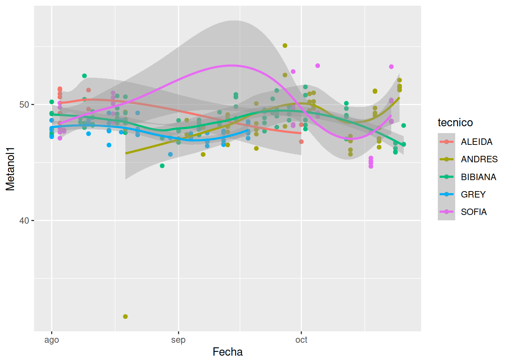
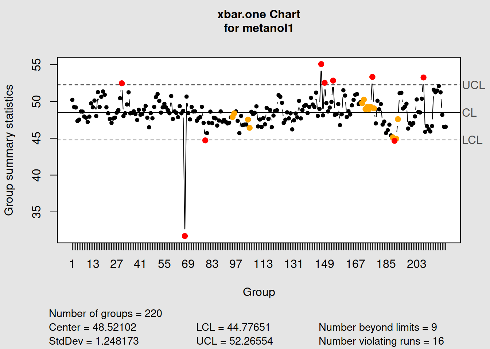
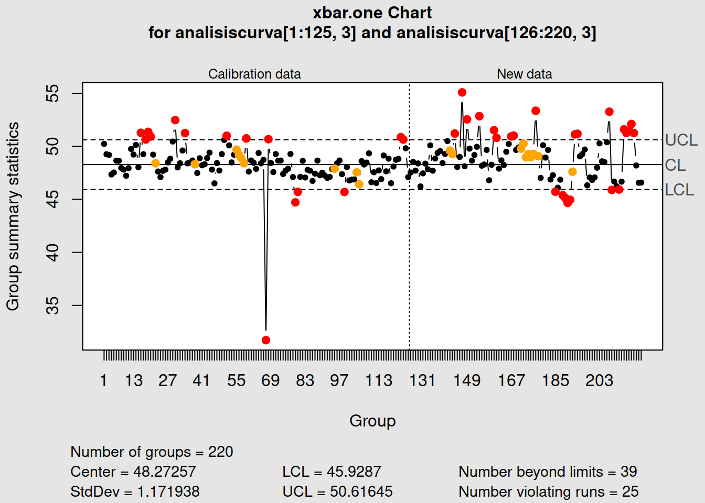

Datos análisis de tendencias
Seminario
Datos análisis de tendencias
A continuación, cargamos los datos del archivo suministrado. El archivo está en formato de Excel y por tanto lo cargamos con la siguiente instrucción.
library(readxl)
analisiscurva<- read_excel("data/tendencia_ultima curva.xlsx")New names:
• `` -> `...9`
• `` -> `...10`
• `` -> `...11`#View(analisiscurva)
is.data.frame(analisiscurva)[1] TRUEhead(analisiscurva[,c(1:8)])# A tibble: 6 × 8
FECHA `EXPERTO TECNICO` `C1 METANOL` `C3 METANOL` `C1 ETANOL`
<dttm> <chr> <dbl> <dbl> <dbl>
1 2023-08-01 00:00:00 BIBIANA 50.2 151. 40.0
2 2023-08-01 00:00:00 BIBIANA 49.2 150. 39.1
3 2023-08-01 00:00:00 BIBIANA 49.2 142. 38.8
4 2023-08-01 00:00:00 BIBIANA 47.3 149. 38.5
5 2023-08-01 00:00:00 BIBIANA 47.5 151. 38.4
6 2023-08-01 00:00:00 GREY 48.6 148. 39.1
# ℹ 3 more variables: `C2 ETANOL` <dbl>, `C3 ETANOL` <dbl>, `C4 ETANOL` <dbl>Veamos como es la estructura de la base de datos, qué tipos de variables tiene.
str(analisiscurva)tibble [220 × 11] (S3: tbl_df/tbl/data.frame)
$ FECHA : POSIXct[1:220], format: "2023-08-01" "2023-08-01" ...
$ EXPERTO TECNICO: chr [1:220] "BIBIANA" "BIBIANA" "BIBIANA" "BIBIANA" ...
$ C1 METANOL : num [1:220] 50.2 49.2 49.2 47.3 47.5 ...
$ C3 METANOL : num [1:220] 151 150 142 149 151 ...
$ C1 ETANOL : num [1:220] 40 39.1 38.8 38.5 38.4 ...
$ C2 ETANOL : num [1:220] 97.2 96.3 99.2 97.4 96.9 ...
$ C3 ETANOL : num [1:220] 152 149 146 148 150 ...
$ C4 ETANOL : num [1:220] 297 289 391 293 296 ...
$ ...9 : logi [1:220] NA NA NA NA NA NA ...
$ ...10 : logi [1:220] NA NA NA NA NA NA ...
$ ...11 : chr [1:220] "OBSERVACIONES" "LOS CONTROLES SE PREPARAN A PARTIR DE SOLUCIONES GRADO REACTIVO" "LA SOLUCION CONTROL 1 TIENE ETANOL A 40 MG/100 ML Y EL METANOL A 50 MG/100 ML. SE PREPARA EN UNA MISMA SOLUCION"| __truncated__ "LA SOLUCION CONTROL 3 TIENE ETANOL Y METANOL A 150 MG/100 ML RESPECTIVAMENTE. SE PREPARA EN UNA MISMA SOLUCION,"| __truncated__ ...Reescribiremos algunos nombres de la base de datos, para un manejo más adecuado.
tecnico<-analisiscurva$`EXPERTO TECNICO`
metanol1<-analisiscurva$`C1 METANOL`
metanol2<-analisiscurva$`C3 METANOL`
etanol1<-analisiscurva$`C1 ETANOL`
etanol2<-analisiscurva$`C2 ETANOL`
etanol3<-analisiscurva$`C3 ETANOL`
etanol4<-analisiscurva$`C4 ETANOL`
fecha<-analisiscurva$FECHAGráfico inicial comparativo, con base en Técnicos, acá no se busca evaluar si existen o no diferencias, ya que no hubo condiciones similares para los mismos. Esto sólo es una visualización de la variable metanol1.
boxplot(metanol1 ~ tecnico, data = analisiscurva, col = c("darkblue", "blue", "lightblue", "blue1","blueviolet"))library(ggplot2)
ggplot(analisiscurva, aes(x = fecha, y=tecnico)) +
geom_line() +
geom_point()my_blue <- "4ABEFF"
ggplot(analisiscurva, aes(factor(tecnico), metanol1)) +
geom_point(color = my_blue, alpha = 0.8)ggplot(analisiscurva, aes(metanol1, fill = factor(tecnico))) +
geom_histogram(binwidth = 1)grafico1<-ggplot(analisiscurva, aes(fecha, metanol1, colour =tecnico))+
geom_point() +
geom_smooth() +
xlab("Fecha") +
ylab("Metanol1")
grafico1`geom_smooth()` using method
= 'loess' and formula = 'y ~
x'
grafico2<-ggplot(analisiscurva, aes(fecha, metanol1, colour =tecnico )) +
geom_point() +
geom_smooth(method = "lm", formula = y ~ x, se = TRUE)+
xlab("Fecha") +
ylab("Metanol1")
grafico2Libreria para cartas de control
Como lo indicamos en unidades anteriores, esta libreria nos permite generar las cartas de control estadistico de la calidad con un objeto de clase “qcc” el cual puede ser graficado. Así se analizan importantes gráficas como las curvas caracteristicas operartivas OC, Carta Schewhart, indices de capacidad del proceso y más.
library(qcc)Observaciones individuales: Metanol 1
Individuales <- qcc(data = metanol1, type="xbar.one")
Individuales$violations$beyond.limits
[1] 30 147 149 154 177 207 67 79 190
$violating.runs
[1] 171 172 173 174 175 176 177 178 95 96 104 105 189 190 191 192Individuales$limits LCL UCL
44.77651 52.26554Individuales$center[1] 48.52102summary(Individuales)
Call:
qcc(data = metanol1, type = "xbar.one")
xbar.one chart for metanol1
Summary of group statistics:
Min. 1st Qu. Median Mean 3rd Qu. Max.
31.71800 47.52853 48.44674 48.52102 49.42209 55.08097
Group sample size: 1
Number of groups: 220
Center of group statistics: 48.52102
Standard deviation: 1.248173
Control limits:
LCL UCL
44.77651 52.26554Capacidad del proceso Metanol 1
process.capability(object = Individuales, spec.limits = c(31.71800, 55.08097 ), confidence.level = 0.95)
Process Capability Analysis
Call:
process.capability(object = Individuales, spec.limits = c(31.718, 55.08097), confidence.level = 0.95)
Number of obs = 220 Target = 43.4
Center = 48.52 LSL = 31.72
StdDev = 1.248 USL = 55.08
Capability indices:
Value 2.5% 97.5%
Cp 3.1196 2.8275 3.4114
Cp_l 4.4874 4.1328 4.8420
Cp_u 1.7519 1.6093 1.8944
Cp_k 1.7519 1.5820 1.9218
Cpm 0.7387 0.6425 0.8347
Exp<LSL 0% Obs<LSL 0%
Exp>USL 0% Obs>USL 0%Monitoreo
monMedias<-qcc(analisiscurva[1:125,3:4], type="xbar", newdata=analisiscurva[126:220,3:4], nsigmas=2)monRangos<-qcc(analisiscurva[1:125,3:4], type="R", newdata=analisiscurva[126:220,3:4], nsigmas=2)monDesviaciones<-qcc(analisiscurva[1:125,3:4], type="S", newdata=analisiscurva[126:220,3:4], nsigmas=2)monIndividuales<-qcc(analisiscurva[1:125,3], type="xbar.one", newdata=analisiscurva[126:220,3], nsigmas=2)
Recordemos que se debe tener una estructra de corridas, para efectuar las cartas vistas en las unidades anteriores. Por ejemplo, a continuación, se observa un resultado pero no adecuado, dado que se usan dos variables con condiciones muy distintas.
Tendencia Media
Gráfica de control para medias
Medias <- qcc(data = analisiscurva[3:4], type = "xbar")
La carta xbar nos permite monitoreorear la media y la variación de un proceso cuando se tienen datos continuos.
Medias$violations$beyond.limits
integer(0)
$violating.runs
[1] 142 143 144 165 166 167 168 169 170 171 172 173 174 80 81 82 94 104 105
[20] 130 131 132 133 189 190 191 192 214Medias$limits LCL UCL
-90.15913 287.6501Medias$center[1] 98.74551summary(Medias)
Call:
qcc(data = analisiscurva[3:4], type = "xbar")
xbar chart for analisiscurva[3:4]
Summary of group statistics:
Min. 1st Qu. Median Mean 3rd Qu. Max.
89.45400 96.68269 98.40561 98.74551 100.46601 115.47156
Group sample size: 2
Number of groups: 220
Center of group statistics: 98.74551
Standard deviation: 89.0505
Control limits:
LCL UCL
-90.15913 287.6501Variabilidad
Gráfica de control para rangos
Rangos <- qcc(data = analisiscurva[3:4], type = "R")La carta R nos permite identificar el rango, con esta carta se detectarán cambios en la amplitud o magnitud de la variación del proceso.
Rangos$violations$beyond.limits
integer(0)
$violating.runs
[1] 17 73 165 80 81 82 189 190 191 192 217 218Rangos$limits LCL UCL
0 328.1965Rangos$center[1] 100.449summary(Rangos)
Call:
qcc(data = analisiscurva[3:4], type = "R")
R chart for analisiscurva[3:4]
Summary of group statistics:
Min. 1st Qu. Median Mean 3rd Qu. Max.
88.75136 97.89485 100.00608 100.44896 102.86603 132.52767
Group sample size: 2
Number of groups: 220
Center of group statistics: 100.449
Standard deviation: 89.0505
Control limits:
LCL UCL
0 328.1965Gráfica de control para desviaciones
Desviaciones <- qcc(data = analisiscurva[3:4], type = "S")La carta S nos permite monitorear la desviación de un proceso.
Desviaciones$violations$beyond.limits
integer(0)
$violating.runs
[1] 17 73 165 80 81 82 189 190 191 192 217 218Desviaciones$limits LCL UCL
0 232.0157Desviaciones$center[1] 71.02814summary(Desviaciones)
Call:
qcc(data = analisiscurva[3:4], type = "S")
S chart for analisiscurva[3:4]
Summary of group statistics:
Min. 1st Qu. Median Mean 3rd Qu. Max.
62.75669 69.22211 70.71498 71.02814 72.73727 93.71121
Group sample size: 2
Number of groups: 220
Center of group statistics: 71.02814
Standard deviation: 89.02058
Control limits:
LCL UCL
0 232.0157Observe que se corroboran los puntos dados en la carta de Rangos. Sin emabrgo, no olvidar, que se debe tener una estructira específica, y no simplemente variables no comparables.